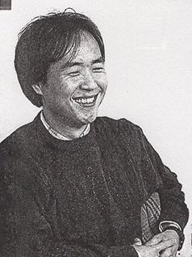
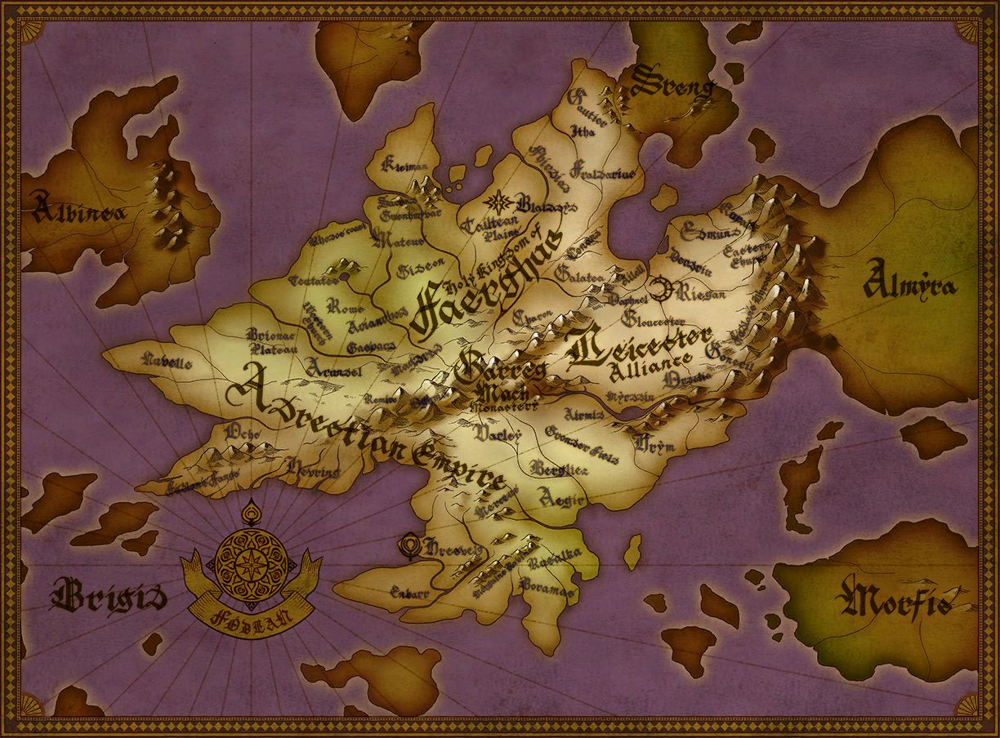

Fire Emblem was created by Shouzou Kaga. He never intended for it to be a commercial game, as it started as a small project between him and three others. However, the first game proved to be successful, so more games were developed. Intelligent Systems developed the games and Kaga would work on the series until Thracia 776 when he would leave Nintendo. At first, the games were only exclusive to Japan. However, two characters from the series, Marth and Roy, were introduced to the hit fighting game Super Smash Brothers Melee, which caused western audiences to become curious about the Fire Emblem series. Due to this intrigue, Nintendo decided to localize The Blazing Blade under the title Fire Emblem.
 Shouzou Kaga, the Series Creator
Roy and Marth as shown in the lastest Smash Brothers game, Super Smash Brothers Ultimate
More games were produced but as time went on, the series started to suffer and by 2010, sales were declining. Nintendo told Intelligent Systems that if the next game didn't sell above 250,000 units, the series would be canceled. Intelligent Systems took a risk due to this, implementing a lot of features that would be new to the series to make the most exstensive game yet. This culminated into the last chance to save the Fire emblem series, Awakening, which is often considered to be the "savior" of the series. This is because sales of the game went extremely well and the game brought in more publicity, causing Nintendo to continue production of the series. The series has done well ever since then, with Three Houses, the latest title, selling 2.87 million copies worldwide and winning two awards at the 2019 Game Awards, one for Best Strategy Game and one for Player's Voice.
Fire Emblem: Three Houses at The Game Awards
Gameplay
Fire Emblem is a tactical RPG (Role Playing Game). The battles focus on the strategy aspect, while the story seems similar to that of an RPG. Battles take place on a grid-like map where the player moves characters across the map to attack enemies. Characters can only move a set number of tiles on the map, however. The battles are turn based where players move all of their characters and then watch as the enemy characters move. The games have both battles that help progress the main story, along with battles that present side stories and quests. Each character has a specific class, which in tern gives them specific abilities and effects how many spaces they can move. For example, the cavalier class that rides on a horse moves more spaces than the armored knight who fights on foot. Characters have their own stats and during battles characters can level up by attacking/killing an enemy or healing an ally. When a character levels up, they can gain stat boosts in a variety of stats such as attack and defense.
The Grid Map where players move characters and take part in battles as shown in Awakening
Another key element of combat that's been in place since Genealogy of the Holy War is the weapon triangle. The best comparison for this is rock-paper-scissors. The weapon triangle consists of swords, lances, and axes. Swords beat axes, lances beat swords, and axes beat lances. Future games would expand on the weapon triangle to add magic and bows, but this is the weapon triangle in its simplest form. The Weapon Triangle as shown in the mobile spin-off game, Fire Emblem Heroes
Characters' weapons also have a set durability. Though not all games have this system, most do. After a weapon is used a number of times, it will break. In this case, you would then have to buy a new weapon at special shops and equip it to the character you want. You can even upgrade weapons at said shop.
A Killer Bow breaks in battle after its durability reaches zero as shown in The Blazing Blade
Relationships can build between characters on and off the battlefield in the form of supports. In battle, characters gain support by getting placed in range of other characters on the map or if said character assists others in battle. A strong support increases battle abilities for both characters involved. On top of this, a feature first introduced in Genealogy of the Holy War and used in many games since, allows characters to fall in love and have children with one another based on their support level. Their child would inherit certain skills and stats from their parents.
A Support Between Anna and the main character Corrin as shown in Fates
There are different modes in the Fire Emblem games. At first the series only had one mode (now known as Classic mode) that had the feature of permanent death. As it is a tactical-war RPG, if one of your characters gets defeated in battled, they will not be able to come back and will be permanently removed from the party if you are playing with Classic mode. Later games introduced Casual mode, where defeated characters would return for the next battle. Fates introduced Phoenix mode, where defeated characters would be revived on the player's next turn. The games also have difficulty levels as well. Though the names change from game to game, the most recent games call these levels Normal, Hard, and Lunatic.
The Three Modes Casual, Classic, and Phoenix as shown in Fates
Setting
The Fire Emblem games take place across multiple unrelated continents, so most games take place in a different world than the last. Therefore, the plots of the games are also different and, most of the time, involve a bunch of unrelated characters. However, all the games are set behind a Medieval or Renaissance backdrop. The main protagonist is typically royalty or a mercenary who is caught in a conflict of some kind between countries across the continent. Most of the time they are tasked with fighting in a war for their country or kingdom.
The games Shadow Dragon and the Blade of Light , Gaiden , Mystery of the Emblem , and Awakening all take place in the continents of Archanea and/or Valentia.Geneaology of the Holy War and Thracia 776 takes place in Jugdral. Blazing Blade and Binding Blade takes place in Elibe, while Sacred Stones, Path of Radiance, and Radiant Dawn takes place in Magvel and Tellius respectively. Fates is in an unamed continent, as the name is never mentioned in the story, while Three Houses is set in the continent of Fodlan.

A Map of Fodlan, the setting of Three Houses
Some common threads include gods, mystical species like dragons and shapeshifters, and the very namesake of the series, the Fire Emblem, which holds a different role depending on which game you play. Though it takes many forms, the Fire Emblem's original form was that of a shield that held five magical gems.